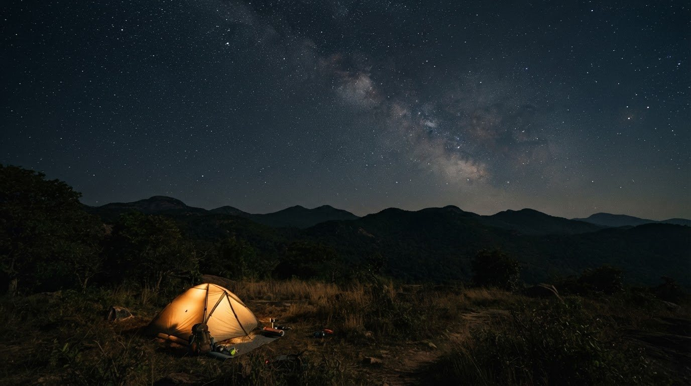

lights off.eyes up.
Under the stars · 12 Sep 2026
A sky with no off switch.
What happens when the phones go away and the telescope comes out. A beginner's night under the Jawadhu sky.
Read the note
09:18 PM / 6 MIN